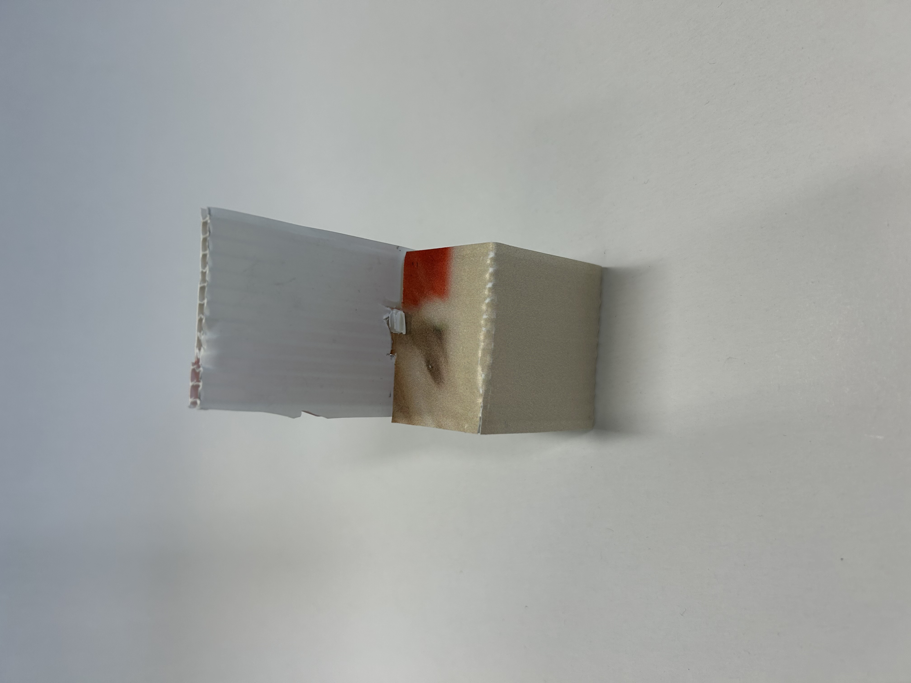
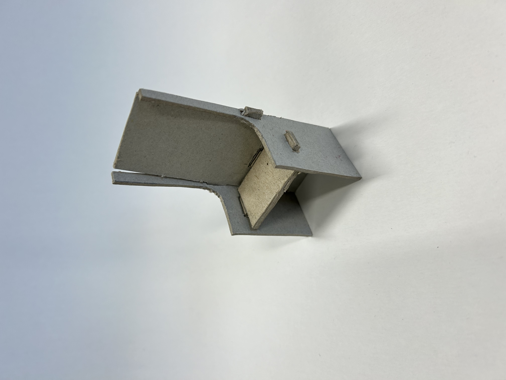

PO3: Flatpack Furniture
Marktonderzoek
Ik heb samen gewerkt met 3 andere klasgenoten en we hebben samen in Pinterest een prikbord aangemaakt en daar ons makrtonderzoek in gedaan. Van all de stoel en designs die ik heb bekeken vondt ik de stoelen met een zijleuning toch wel cool. Ook vond ik de epoxy een heel leuk idee om in mijn stoel te verwerken. https://pin.it/1DlZtMspT (kopier de link en plak het in een nieuw tabblad als de link niet werkt.)
Houtonderzoek: Houtproduchten
- Spijkers en schroeven: Een houtverbinding waar gebruik wordt gemaakt van schroeven en/of spijkers om hout te verbinden.

- Koud op elkaar lijmen: Een houtverbinding waar, met gebruik van houtlijm, hout koud gelijmd word.

- Halfhoutverbinding: Een houtverbinding waar specifieke stukken hout afgezagen wordt, andere stukken hout ingezet wordt en dan gelijmd met houtlijm.

- Verstek: Wanneer twee planken zijn gesneden op een 45 gradenhoek om een perfecte 90 graden te maken. Dit wordt vaak gedaan met houtlijm.

- Slisverbinding: Een houtverbinding waar een gleuf of meerdere gleuven gevuld word(en) met ander hout en dan gelijmd wordt.

- Pen gat verbinding: Een houtverbinding waar een uitsteeksel hout van een plank in het gat van een ander stuk hout wordt gedrukt.

- Tandverbinding: Tanden in het hout waar lijm tussen moet om het hout stevig bij elkaar te houden.

- Zwaluwstaartverbinding: Een zwaluwstaartverbinding is een sterke houtverbinding met wigvormige tanden die stevig in elkaar grijpen.

- Deuvelverbing: De deuvelverbinding wordt gemaakt om door in bijde stukjes hout precieze gaten te boren zodat je daarna de deuvel(Het stokje dat in de gaten gaat) erin kan stoppen. Over het algemeen is de deuvelverbinding redelijk sterk, maar als je er nog lijm bij stopt is het een hele sterke verbinding.

Houtonderzoek: Houtsoorten
Brainstormen
Bij het brainstormen heb ik met een paar andere klasgenoten mindmeister gebruikt net zoals het houtonderzoek. Mindmeister is makkelijke te gebruiken dus daarom hebben we gekozen om het daar in te maken. Uit deze mindmap heb ik gekozen om mijn eindresultaat uit hout te maken aangezien dat sterk is maar ook mooi is als intrieur. Ook is het bij hout goedkoop waardoor je makkelijk massale productie kan laten doen, en je kunt daarmee makkelijke winst maken. En naast deze dingen is het ook nog is heel makkelijk om het in elkaar te zetten aangezien je makkelijk verbindingen kunt maken met hout. Om de stoel wat moderner en mooier te maken zou ik de epoxy gebruiken want dat geeft een mooi effect aan de stoel maar het ziet er ook nog een mooi en modern uit. Zie hieronder mijn brainstorm mindmap:
Onderbouwing
Zoals ik bij het brainstormen al gezegt had, heb ik gekozen om voor een moderne en unique stijl te gaan. Hierbij zou ik een mooie donkere kleur hout gebruiken voor de basis, en een laag epoxy op het zit deel of de leuning van de stoel voor een wat uniquere stijl. De doelgroep die ik bij deze stijl en design zou hangen, is toch wel voor mensen tussen 25 en 50 die voor een modern en unique design gaan. Waarom ik niet voor mensen met de leeftijd erboven of eronder heb gekozen is omdat het voor de ouderen niet perse lekker zou zitten. Voor de jongeren is de stoel misschien wel toepasselijk maar ook deze leeftijdsgroep gaat voor een meer comfortabeler design. Ook voor kinderen of ouders met een kinderen is het zeker jammer als er wordt gekoeid wordt op de stoel. Aangezien het hout is kan het er snel intrekken en dan zit er een vieze vlek op de stoel die je niet meer weg krijgt. Daarom zou je eventueel de stoel kunnen laten impregneren om je hout met een laagje te beschermen.
Vormenstudies
Voor mijn eerste vormstudie design ben ik gegaan voor een heel simpel design dat maar bestaat uit 1 verbinding.
Bij de 2de vormstudie ben ik gegaan voor meer een ligstoel. Ik heb deze met een paar pen-gat verbindingen gemaakt. Het is een redelijk sterke stoel voor het design en het materiaal.
Nummer 3 van de vormstudie's heb ik een gewone stoel voor aan de eettafel of voor bij een gezellig etentje bij je thuis. Deze is gemaakt uit een materiaal dat net tussen karton en papier in zit. Het heeft de textuur van papier, maar de sterkte en dikheid van karton.
Design
Ik heb een design ontworpen en ik wil die uit hout en epoxy maken. Het lijkt me heel leuk om dat te doen, en zeker ook om met een nieuw materiaal te werken. Bij de vormen van de stoel heb ik gekozen voor dat de zijleuning tot achter de stoel nog doorloopt en dat het niet alleen dient als leuning maar ook als poten. Ik vind dat dat de stoel een beetje textuur geeft in plaats van dat het heel kaal en saai is. Bij het ontwerpen heb ik ook gekeken wat ik nou wou met het achterste stuk. Ik heb toen besloten om het 1 groot stuk te laten in plaats van er onderaan een gat te maken dat het meer poten vormt. Ook dat zou de stoel iets meer effect, stijl en textuur geven. Ik heb een paar afbeeldingen van hoe het eruit ziet als bestand en 3d design. Dit is mijn eindontwerp van mijn stoel in een digitaal ontwerp.


Eindproduct
Bij het eind Het idee was om het uit hout en epoxy te maken, maar dat is helaas niet gelukt vanwege tijdproblemen. Dus ik heb mijn stoel laten 3D printen door een vriend tot 2 keer toe omdat het niet goed was. De eerste keer was het meer dat ik nog niet wist hoeveel millimeter je tussen de verbindingen moest doen ivb met het printen, en er kwam een foutje bij die ik daarna pas zag. Bij de 2de keer had ik mijn foutjes aangepast en de verbeterd. Helaas door het gebrek aan tijd had ik nog 1 foutje gemaakt waardoor deze keer het hele ding ook was verpest. Dus heb ik maar geimproviseerd en er hopelijk toch nog iets van gemaakt te hebben. Hier is mijn ontwerp:

Reflectie
Ik begon met veel plezier dit project en had dan ook een goeie start. Het project liep gewoon helemaal prima met het houtonderzoek en de houtverbindingen en ook zelfs nog met het ontwerpen. Maar toen bleek het dat ik nog maar een paar lessen over had om alles af te maken. Aangezien ik al heel veel voor andere dingen van school moest doen kwam ik er niet aan toe om thuis verder door te gaan. Ik had nog maar een paar lessen en begon na te denken hoe ik het nog wel een goed eindproject ging maken aangezien ik nu het niet meer uit hout en epoxy kon maken. Na wat overleg had ik het laten printen maar die was niet goed, en toen heb ik het nog een keer laten printen op de allerlaatste dag. En ook bij deze bleek dat er fouten in zaten waardoor die ook weg viel. Nu zat ik alleen nog maar met een digitaal ontwerp en wat stukken waarbij er iets was afegbroken zodat het niet in elkaar kon. Na wat denken heb ik de stukken gebruikt om er alsnog een stoel van te maken, maar niet op de manier hoe ik het wou. Dus na al deze dingen die tegen zaten en waren gebeurt kwam ik dus uit op totaal iets anders dan dat ik van te voren aan gedacht had of had naar gewerkt. Ik vind het erg jammer dat dit zo is gelopen en mijn project zo'n beetje naar de klote is, maar ik kan er weinig aan doen. Dus voor de stoel die ik als eindproduct gebruikt mist dan wel een stukje, maar het is het beste wat ik er van kon maken. Ik hoop dat ik volgend project iets meer tijd heb om er thuis aan te werken zodat ik niet in tijdsnood kom.